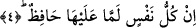

necmu” kelimesinden maksad herhangi bir özel yıldız değildir. Bu isim cins ismidir.
Nitekim Hasan Basri (rh) şöyle der: Her yıldızın hiç kuşkusuz karanlıkları delen bir
aydınlığı vardır. Yani her yıldızın kendisinde -ışık gücü farklı olmakla birlikte-
karanlıkları delen bir ışık verme özelliği vardır. Allah Teâlâ bu âyette gök ve gökte
bulunan yıldızlar üstüne yemin ediyor. Çünkü bunlar O’nun kudret ve hikmetini
gösteriyor.
Burada kasdedilen yıldızın karanlıkları delen ve bilinen özel bir yıldız olması da
mümkündür. Bu takdirde maksad yedinci semadan ışık veren zühal yıldızı ile süreyya
yıldızı olur. Zühal yıldızı yedi kat semanın kalınlığını ışığı ile delmektedir. Süreyya
yıldızı ise sabah yıldızıdır. Süreyya yıldızına araplar en-necm veya eş-şihab ismini
verirler.
Rivâyet edilmiştir ki bir gece Hz. Peygamber (s.a.) amcası Ebû Tâlib ile
oturmuşlardı. Ansızın bir yıldız parladı ve ondan büyük bir ateş ışığı zâhir oldu. Ebû
Tâlib korktu ve “bu şey de nedir?” diye sordu. Hz. Peygamber (s.a.) buyurdu ki: “Bu
göklerden şeytanı kovan yıldızdır ve ilâhî kudretten bir alâmettir.” Bu sırada Cebrâil
“Gökyüzüne ve târıka (sabah yıldızına) yemin ederim.” âyetiyle geldi.
Bu son âyette sâkıb ve târık olan cemal isminin yıldızına, celal isminin kevkebine
işâretler vardır.
Kâşânî şöyle der: Buradaki yıldızdan maksad insan ruhu ile nefsin karanlığı ortasında
zuhûr eden akıldır. Bu ruh ve akıl, nefsin karanlıklarını delip o karanlıkların içine nüfuz
eden, nuru ile insanın görmesini sağlayan ve hidâyete ermesine yardımcı olan bir
“yıldız”dır. Nitekim aynı anlama gelmek üzere bir başka âyet-i kerimede şöyle
buyuruluyor: “Daha nice alâmetler (yarattı) onlar yıldızlarla da yollarını
doğrulturlar.” (Nahl, 16/16)
4. Hiç kimse yoktur ki üzerinde bir koruyucu, bir denetleyici bulunmasın.
Bu âyet-i kerime yukarda birinci âyette geçen kasem/yeminin cevabıdır. O yeminle
buradaki cevap arasında geçen ikinci ve üçüncü âyetler birer parantez cümlesi olup,
üzerine yemin edilen yıldızla semanın şanının yüceliğini pekiştirmektedir. Böylece
yemin edilerek vurgulanan gerçeğin ifâde edildiği cümlenin mânâsı güçlendirilmektedir.
Bu son âyette yer alan “in” olumsuzluk edatıdır, “lemmâ” ise, “illâ” mânâsınadır.
Zeccac der ki: “Lemmâ” iki yerde “illâ” mânâsına kullanılır. Bunlardan birisi
olumsuzluk “in”inden sonra, diğeri ise kasem konusundadır. Sözgelimi “seeltuke lemmâ
fealte” denilirki mânâsı; “illa faalte” şeklindedir.
Âyet-i kerimedeki “hâfız” kelimesi “alâ” harfi ile geçişli yapılmıştır. Bunun nedeni
kelimenin içerisindeki otorite ve hakimiyet mânâsından dolayıdır. Buna göre âyet-i